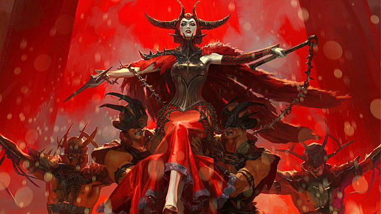

World of Ravnica
Você se mostrou digno de fazer parte do culto, você possui o fogo da mana vermelha, e a independência da mana preta tem todos os valores de um exemplar Rakdos, agora possui a benção de Rakdos e pode seguir sua jornada de
Caos!
